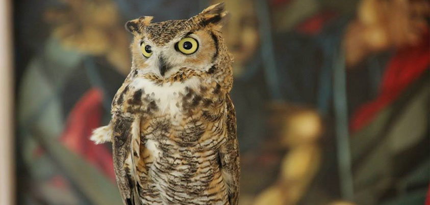
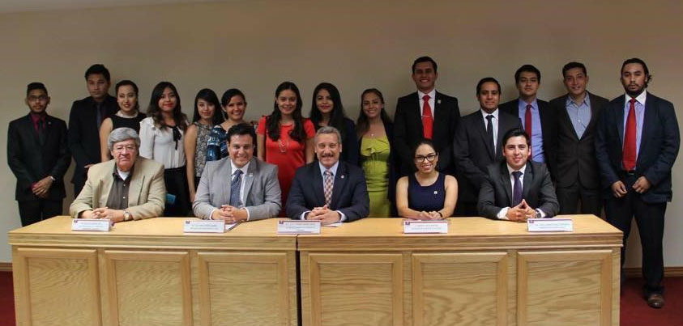
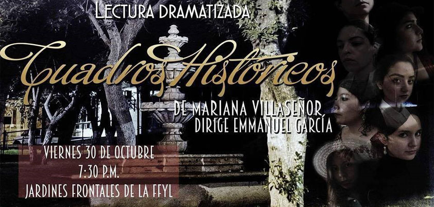
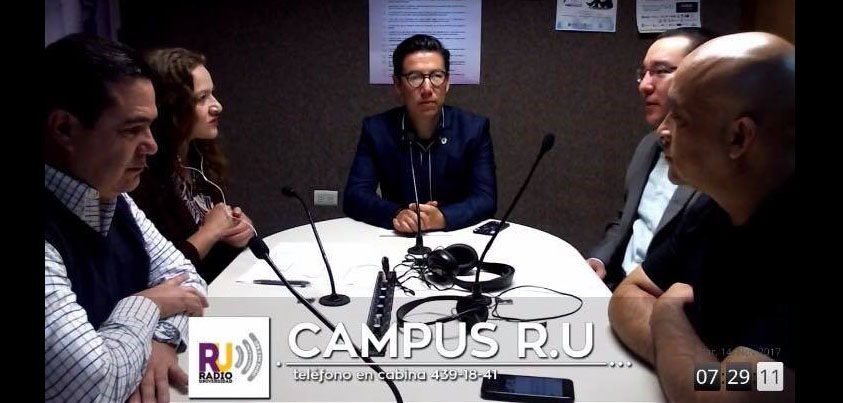
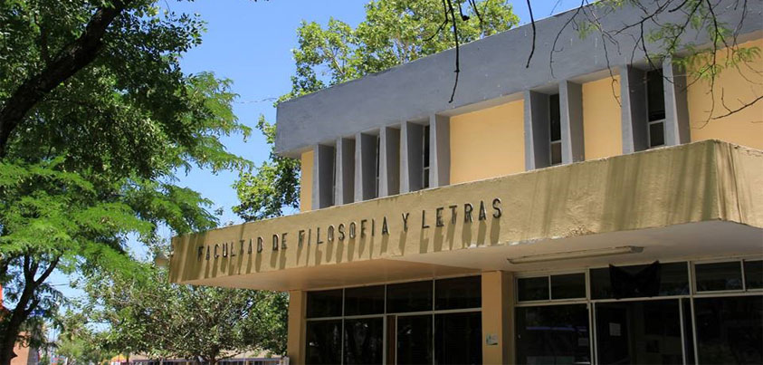

El presidente de la tercera sociedad de alumnos de la Facultad de Filosofía y Letras en el periodo de 2013-2014, fue Julio César Gómez Gándara, alumno de la licenciatura en Historia?

Dato curioso #2
¿Sabías que...
Ozzy es la mascota de la Facultad de Filosofía y Letras, es un búho Virginanus, el cual fue rescatado del maltrato?

Dato curioso #3
¿Sabías que...
La actual delegada de historia Antonia Domínguez Quezada, perteneció a la Sociedad de Alumno de 2015 – 2016, en el puesto de difusión?

Dato curioso #4
¿Sabías que...
Dentro del Grupo de Teatro Enrique Macín, han contado con la participación de dos estudiantes de historia, siendo Julio Gómez y María Montana?

Dato curioso #5
¿Sabías que...
El actual director de Radio Universidad, Marco Antonio Gutiérrez, es egresado de la Licenciatura en Historia?
Dato curioso #6
¿Sabías que...
Ángel Díaz, tercer delegado ante la Asamblea Nacional de Delegados de Historia es promotor del museo del Sauz?

Dato curioso #7
¿Sabías que...
La licenciatura en Historia cuenta con 60 maestros?
Dato curioso #8
¿Sabías que...
Eduardo Flores Melgar, fue el primer egresado de la Licenciatura en Historia en recibir su título universitario?
Dato curioso #9
¿Sabías que...
Oscar Gerardo Sánchez Enríquez, alumno de la licenciatura en Historia – Modalidad Virtual, resulta campeón de ajedrez en el Torneo Internacional de la Habana en 2012?